Mehrzeiliger Text
TEXTAREA · mehrzeiliges Freitext-Eingabefeld
Was ist ein mehrzeiliges Textfeld?
- 1.1Feld hinzufügen und Aufbau des Eigenschaftsbereichs
1.1Feld hinzufügen und Aufbau des Eigenschaftsbereichs
Überblick
Mehrzeiliger Text (TEXTAREA) ist ein Freitext-Eingabefeld, in das mehrere Zeilen eingegeben werden können. Verwenden Sie ihn, wenn Inhalte in Sätzen erfasst werden müssen, etwa Verlauf unerwünschter Ereignisse · ergriffene Maßnahmen · Besonderheiten. Eingegebene Zeilenumbrüche bleiben unverändert erhalten, und durch Ziehen an der rechten unteren Ecke lässt sich das Eingabefeld vergrößern. Genügt eine Zeile, verwenden Sie einzeiligen Text; sind Zahlenberechnungen · Bereichsvergleiche nötig, verwenden Sie den Typ Zahl.
Bildschirmbeschreibung
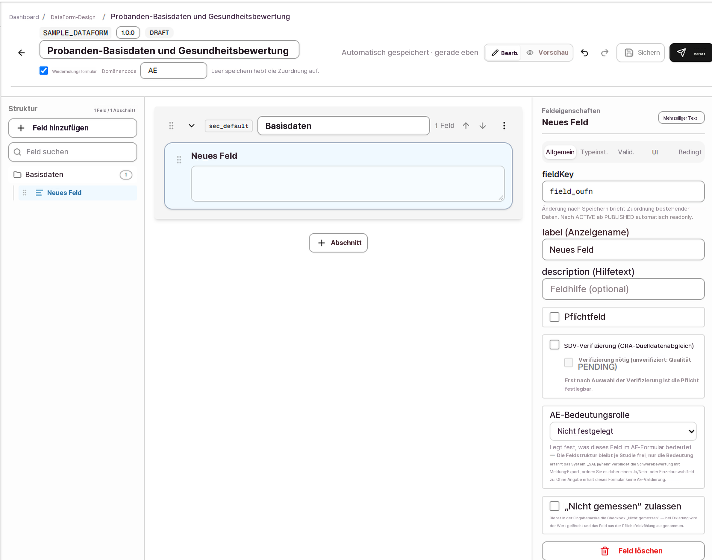
[+ Feld hinzufügen] — Wenn Sie hier den Typ festlegen, wird das Feld erstellt.
Im Strukturbaum wird ein neues Feld hinzugefügt. (Das Symbol erscheint in einer Form, die mehrere Zeilen darstellt)
Auf dem WYSIWYG-Canvas erscheint ein Eingabefeld mit mehrzeiliger Höhe. Der Canvas ist eine Vorschau der Eingabemaske; Änderungen an den Einstellungen werden sofort übernommen.
fieldKey — der tatsächliche Schlüssel, unter dem der Wert gespeichert wird. 2.1
label (Anzeigename) · description (Hilfetext) — der auf dem Bildschirm angezeigte Name und die ergänzende Beschreibung. 2.1
Pflichtfeld · SDV-Verifizierung · AE-Bedeutungsrolle · „Nicht gemessen“ zulassen — werden in Kapitel 2 einzeln erläutert.
Typ-Badge — der Typ des ausgewählten Felds. Nach dem Hinzufügen kann er nicht mehr geändert werden.
5 Eigenschafts-Tabs — Allgemein · Typeinstellungen · Validierung · UI · Bedingt. Die Kapitel 2–6 dieses Handbuchs entsprechen den einzelnen Tabs.
Zu beachten
Unbedingt prüfen Datenschäden · Formular nicht abschließbar
- • Der Typ kann nach dem Hinzufügen nicht geändert werden. Wenn Sie den falschen Typ gewählt haben, löschen Sie das Feld und fügen Sie es erneut hinzu. (Nur bei Unterelementen von Tabellen und Feldgruppen ist eine Typänderung ausnahmsweise möglich.)
- • Nach der Veröffentlichung (PUBLISH) kann die Struktur nicht mehr geändert werden. Sind im laufenden Betrieb Änderungen nötig, veröffentlichen Sie eine neue Version.
Leicht missverständliches Verhalten
- • Wenn Sie Einstellungen ändern, erscheint oben „Änderung erkannt — automatisches Speichern ausstehend“. Kurz darauf wird automatisch gespeichert; Sie können auch [Speichern] wählen, um sofort zu speichern. Rückgängig machen mit
Ctrl+Z.
Tab „Allgemein“ — Name · Pflicht · Verifizierung · Nicht gemessen
- 2.1fieldKey · Anzeigename · Hilfetext
- 2.2Pflichtfeld
- 2.3SDV-Verifizierung (CRA-Quelldatenabgleich)
- 2.4„Nicht gemessen“ zulassen
2.1fieldKey · Anzeigename · Hilfetext
Überblick
Bereich zur Festlegung des Namens eines Felds. Speicherschlüssel (fieldKey) und angezeigter Name (label) sind unterschiedliche Werte, und bis wann sie geändert werden dürfen, ist verschieden.
Bildschirmbeschreibung
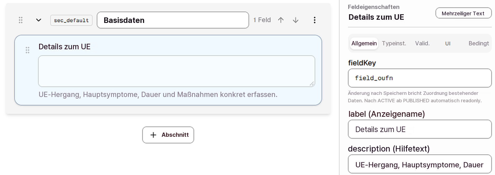
label (Anzeigename) — Geben Sie den Namen des Elements ein, der in der Eingabemaske angezeigt wird.
Erscheint als Feldtitel auf dem Canvas.
description (Hilfetext) — Geben Sie die ergänzende Beschreibung ein, die unter dem Anzeigenamen erscheint. Bleibt sie leer, wird nichts angezeigt.
Erscheint als graue Schrift unter dem Eingabefeld.
fieldKey — der tatsächliche Schlüssel, unter dem der Wert gespeichert wird. Beim Hinzufügen eines Felds wird er automatisch vergeben, z. B. field_oufn, und kann mit Buchstaben · Ziffern · Unterstrichen geändert werden. Er wird auf dem Bildschirm nicht angezeigt — prüfen Sie unbedingt den Abschnitt „Zu beachten“ unten.
Zu beachten
Unbedingt prüfen Datenschäden · Formular nicht abschließbar
- • ⛔ Ändern Sie den fieldKey nach dem Speichern nicht. Wie der Bildschirmhinweis sagt: „Änderung nach Speichern bricht Zuordnung bestehender Daten“ — bereits eingegebene Werte werden nicht mit dem neuen Schlüssel verknüpft und gehen praktisch verloren.
- • Wechselt das Formular nach ACTIVE in den Status PUBLISHED, wird das Eingabefeld fieldKey automatisch schreibgeschützt. Erst ab diesem Zeitpunkt verhindert das System Änderungen; bis dahin müssen Sie selbst darauf achten.
Leicht missverständliches Verhalten
- • Gerade bei Freitextelementen ist der Hilfetext wichtig. Wird nicht mitgeteilt, was bis zu welcher Detailtiefe zu erfassen ist, unterscheidet sich die Ausführlichkeit je nach Erfasser, und die Daten lassen sich schwer zusammenführen und auswerten.
Hinweis
- • Der Hilfetext (
description) undhelpTextim Tab „UI“ sind unterschiedliche Elemente. Der Unterschied wird in 5.4 erläutert.
2.2Pflichtfeld
Überblick
Legt fest, ob dieses Element zwingend ausgefüllt werden muss. Wenn aktiviert, wird das Speichern in der Eingabemaske blockiert, solange der Wert leer ist.
Bildschirmbeschreibung
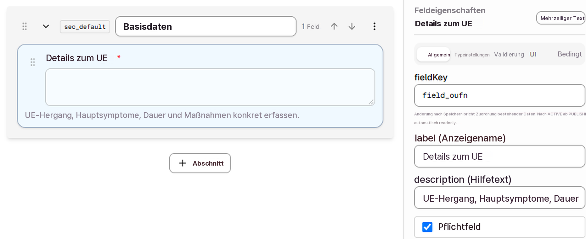
Pflichtfeld — Wenn aktiviert, wird dieses Feld zum Pflichtfeld.
Rechts neben dem Anzeigenamen auf dem Canvas erscheint ein roter Stern (*), der Benutzer auf die Pflicht hinweist.
Zu beachten
Unbedingt prüfen Datenschäden · Formular nicht abschließbar
- • Legen Sie Freitextelemente nicht pauschal als Pflichtfeld fest. Gibt es nichts zu erfassen, werden bedeutungslose Texte wie „keine“ eingetragen, und die Datenqualität sinkt sogar. Wenn es Fälle ohne zu erfassenden Inhalt geben kann, ziehen Sie zusätzlich „Nicht gemessen“ zulassen 2.4 oder die bedingte Anzeige Kap. 6 in Betracht.
- • Felder, die durch bedingte Anzeige ausgeblendet sind, sind von der Pflichtprüfung befreit. Kap. 6 Denn würde ein nicht angezeigtes Element als Pflicht verlangt, könnte das Formular nicht abgeschlossen werden.
- • Das Ausblenden im Tab „UI“ nimmt das Feld nicht aus der Pflichtfeldzählung aus. Verwechseln Sie es nicht mit der bedingten Anzeige. 5.3
Hinweis
- • Die Pflichtangabe wird für die Bewertung des Formularabschlusses verwendet. Ist ein Pflichtfeld leer, wird das Formular nicht als abgeschlossen gezählt.
2.3SDV-Verifizierung (CRA-Quelldatenabgleich)
Überblick
SDV (Source Data Verification) ist das Verfahren, bei dem der Monitor (CRA) die eingegebenen Werte mit den Quelldaten der Prüfstelle abgleicht. Hier legen Sie fest, ob dieses Feld Gegenstand dieses Abgleichs ist. Diese Einstellung ist bei allen Feldtypen gleich, daher ist auch der Bildschirm unabhängig vom Typ identisch.
Bildschirmbeschreibung


SDV-Verifizierung (CRA-Quelldatenabgleich) — Wenn aktiviert, wird dieses Feld in die Abgleichliste des CRA aufgenommen.
Mit der Aktivierung wird das Unterelement aktiv.
Verifizierung erforderlich (unverifiziert: Qualität PENDING) — kann erst festgelegt werden, nachdem ① aktiviert wurde. Wenn aktiviert, bleibt der Qualitätsstatus der betreffenden Daten auf PENDING, bis der CRA den Abgleich abgeschlossen hat.
Bevor ① aktiviert ist, ist ② ausgegraut und inaktiv. Wie der Bildschirmhinweis sagt: „Erst nach Auswahl der Verifizierung ist die Pflicht festlegbar.“
Zu beachten
Unbedingt prüfen Datenschäden · Formular nicht abschließbar
- • Bei einer Wertänderung wird die Verifizierung aufgehoben. Wird der Wert eines bereits VERIFIED-Felds geändert, fällt der Qualitätsstatus auf PENDING zurück, und der CRA muss erneut abgleichen. Bei Freitextelementen gilt schon eine kleine Umformulierung als Wertänderung; seien Sie daher mit Änderungen nach abgeschlossenem Abgleich besonders vorsichtig.
Leicht missverständliches Verhalten
- • SDV kann nicht von der Person durchgeführt werden, die die Daten eingegeben hat. Das System erzwingt eine Kreuzprüfung (Cross-User SoD); eingebende und verifizierende Person müssen daher zwingend verschieden sein.
Hinweis
- • Der Qualitätsstatus durchläuft PENDING → VERIFIED → CLEAN. Ist auch nur ein Feld mit Verifizierungspflicht unverifiziert, können die betreffenden Daten nicht CLEAN werden.
- • Werden alle Felder für SDV festgelegt, steigt der Monitoring-Aufwand stark an. Legen Sie vorrangig primäre Endpunkte · Sicherheitsparameter fest.
2.4„Nicht gemessen“ zulassen
Überblick
Mit dieser Funktion wird der Fall, dass keine Aufzeichnung möglich ist, durch einen eigenen Wert unterscheidbar erfasst. Bleibt das Feld leer, lässt sich „noch nicht eingegeben“ nicht von „konnte nicht festgestellt und daher nicht erfasst werden“ unterscheiden. Diese Erklärung unterscheidet beides.
Bildschirmbeschreibung

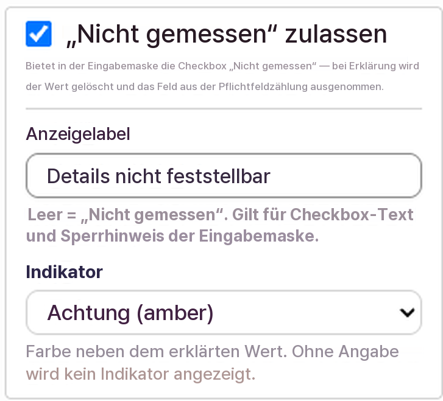
„Nicht gemessen“ zulassen — Wenn aktiviert, erscheint in der Eingabemaske die Checkbox „Nicht gemessen“, und die beiden folgenden Elemente werden angezeigt.
Anzeigelabel — Bleibt es leer, gilt der Standardwert „Nicht gemessen“.
Wenn Sie es in Details nicht feststellbar ändern, wird dieser Text sowohl für die Checkbox der Eingabemaske als auch für den Sperrhinweis verwendet.
Indikator — Standardwert ist Keine.
Wenn Sie ihn auf Achtung (amber) ändern, erscheint neben dem erklärten Wert eine Markierung in dieser Farbe.
Zu beachten
Unbedingt prüfen Datenschäden · Formular nicht abschließbar
- • Bei der Erklärung wird der Wert gelöscht. Wie der Bildschirmhinweis sagt — „bei Erklärung wird der Wert gelöscht und das Feld aus der Pflichtfeldzählung ausgenommen.“ Bei Freitextelementen kann bereits ausführlich verfasster Inhalt vollständig verloren gehen; informieren Sie die Benutzer daher unbedingt im Voraus.
Leicht missverständliches Verhalten
- • Erklärte Felder werden aus der Pflichtfeldzählung ausgenommen. Das Formular kann daher auch bei einem Pflichtfeld abgeschlossen werden.
- • Formulieren Sie das Anzeigelabel am besten so, dass erkennbar ist, was bei diesem Element tatsächlich nicht möglich war. Mit einem Text wie
Details nicht feststellbaraus der Aufnahme passt es auch zu Freitextelementen, bei denen der Ausdruck „gemessen“ unpassend ist.
Hinweis
- • Ohne festgelegten Indikator wird die Farbmarkierung nicht angewendet. Wenn eine Hervorhebung nötig ist, wählen Sie z. B. Achtung (amber).
Tab „Typeinstellungen“ — Eingabeformat
- 3.1Gesamtaufbau des Tabs „Typeinstellungen“
- 3.2Minimale · maximale Länge
- 3.3Regulärer Ausdruck (pattern)
- 3.4Standardwert (defaultValue)
3.1Gesamtaufbau
Überblick
In diesem Tab legen Sie das Eingabeformat fest. Die hier festgelegten Werte werden beim Speichern vom System erneut geprüft; es handelt sich also nicht nur um einen Hinweis auf dem Bildschirm, sondern um echte Sperrbedingungen. Bei mehrzeiligem Text werden tatsächlich drei Elemente verwendet.
Bildschirmbeschreibung
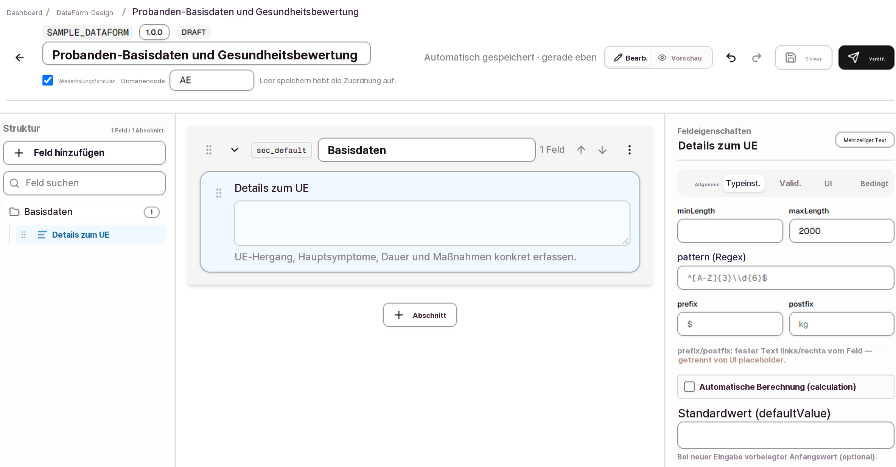
minLength · maxLength — Unter- und Obergrenze der Zeichenanzahl. 3.2
pattern (Regex) — das Format, dem der Wert entsprechen muss. 3.3
prefix · postfix — die Elemente werden angezeigt, gelten aber nicht für mehrzeiligen Text. Diese Funktion fügt links und rechts vom Eingabefeld festen Text an und passt nicht zu einem mehrzeiligen Eingabefeld. Eingaben erscheinen nicht auf dem Bildschirm; lassen Sie die Felder daher leer.
Automatische Berechnung (calculation) — diese Funktion berechnet einen Wert aus den Werten anderer Felder und wird bei diesem Typ nicht verwendet. Wenn Sie eine Berechnung benötigen, verwenden Sie sie beim Typ Zahl.
Standardwert (defaultValue) — ein Wert, der bei einer neuen Eingabe vorbelegt wird. 3.4
Zu beachten
Unbedingt prüfen Datenschäden · Formular nicht abschließbar
- • Dagegen ist ein dunkel angezeigter Wert (maxLength
2000in der Aufnahme) bereits eingestellt. Wenn er nicht benötigt wird, müssen Sie den Wert löschen, damit die Einschränkung aufgehoben wird.
Leicht missverständliches Verhalten
- • Die hellgrau angezeigten
^[A-Z]{3}\d{6}$·$·kgin den Eingabefeldern sind Eingabebeispiele (placeholder) und keine eingestellten Werte. Bleibt ein Feld leer, gilt die betreffende Einschränkung nicht. - • Der Standardwert von maxLength ist 2000 und damit größer als beim einzeiligen Text (200), da dieser Typ mehrzeilige Beschreibungen aufnimmt. Eine Obergrenze gibt es dennoch; prüfen Sie bei Elementen für lange Verlaufsbeschreibungen vorab, ob sie ausreicht.
Hinweis
- • Der Aufbau dieses Tabs ist durch den beim Erstellen des Felds gewählten Typ festgelegt. Bei einem anderen Typ ändern sich auch die Elemente dieses Tabs.
3.2Minimale · maximale Länge
Überblick
Legt den Bereich der Zeichenanzahl fest, die eingegeben werden kann. Die beiden Elemente sind voneinander unabhängig; es funktioniert auch, wenn nur eines eingegeben wird.
Bildschirmbeschreibung
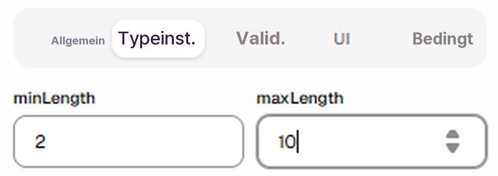
minLength — die minimale Zeichenanzahl. 2 im Beispiel bedeutet „mindestens zwei Zeichen“.
maxLength — die maximale Zeichenanzahl. 10 im Beispiel bedeutet „höchstens zehn Zeichen“.
Zu beachten
Unbedingt prüfen Datenschäden · Formular nicht abschließbar
- • Setzen Sie bei Freitextelementen keine enge Obergrenze.
10in der Aufnahme ist nur ein Beispiel, um die Einstellung zu zeigen. Mit zehn Zeichen lassen sich Verlauf oder Maßnahmen nicht beschreiben; Benutzer kürzen dann den Inhalt, und die Aufzeichnung wird lückenhaft. - • Längenbegrenzungen ändern das Aussehen auf dem Canvas nicht. Sie sind auf dem Bildschirm nicht erkennbar; liegt der Wert außerhalb des Bereichs, wird er beim Speichern blockiert.
- • Wenn Sie die Begrenzung in einem bereits produktiv genutzten Formular verengen, können vorhandene Daten gegen die neue Begrenzung verstoßen. Solche Werte werden beim erneuten Speichern blockiert; entscheiden Sie daher sorgfältig, ob Sie die Begrenzung nach der Veröffentlichung verengen.
Leicht missverständliches Verhalten
- • Die Länge wird einschließlich Leerzeichen und Zeilenumbrüchen berechnet. Jeder Zeilenumbruch erhöht die Zeichenanzahl, daher wird die Obergrenze bei mehrzeiliger Eingabe schneller erreicht als erwartet.
- • Es genügt, nur eine Seite festzulegen — wenn nur eine Obergrenze gelten soll, geben Sie nur maxLength ein. Bei Freitextelementen ist es oft nützlicher, nachlässige Eingaben über eine Mindestlänge herauszufiltern.
3.3Regulärer Ausdruck (pattern)
Überblick
Legt das Format, dem der Wert entsprechen muss, als regulären Ausdruck fest. Da mehrzeiliger Text jedoch freie Beschreibungen aufnimmt, wird das Format selten festgelegt. Wenn er verwendet wird, dann meist zum Herausfiltern unzulässiger Zeichen.
Bildschirmbeschreibung
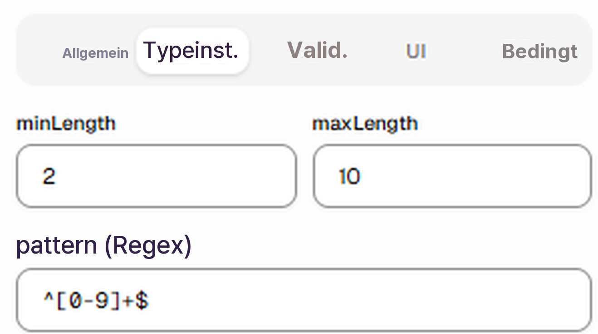
^[0-9]+$ in pattern eingegeben (Eigenschaftsbereich)pattern (Regex) — Werte, die vom eingegebenen Format abweichen, werden nicht gespeichert. ^[0-9]+$ in der Aufnahme bedeutet „nur Ziffern, mindestens 1 Zeichen“ und ist ein Beispiel, um die Einstellung zu zeigen.
Zu beachten
Unbedingt prüfen Datenschäden · Formular nicht abschließbar
- • ⛔ Wenn Sie
^…$auf einen Wert mit Zeilenumbrüchen anwenden, wird das Speichern blockiert. Beispielsweise lässt^[\uAC00-\uD7A3]+$keine Zeilenumbrüche zu; sobald Benutzer in mehreren Zeilen schreiben, wird das Speichern blockiert. Wenn Sie für mehrzeilige Eingaben eine Formatbeschränkung festlegen, nehmen Sie den Zeilenumbruch unbedingt in die zulässigen Zeichen auf. - • Passt das Format nicht, werden Benutzer erst beim Speichern blockiert. Teilen Sie das erwartete Format vorab per placeholder oder helpText mit. 5.4 Wenn Sie den bei einem Verstoß angezeigten Text selbst festlegen müssen, verwenden Sie die Regel „Format (Regex)“ im Tab „Validierung“. 4.3
Leicht missverständliches Verhalten
- •
\sumfasst Leerzeichen · Tabulatoren · Zeilenumbrüche. Um mehrzeilige Eingaben zuzulassen, ist es am einfachsten,\sin die Menge der zulässigen Zeichen aufzunehmen — das zweite Beispiel in der Tabelle oben verwendet diese Methode. - •
^bedeutet Anfang,$bedeutet Ende. Lassen Sie beide weg, besteht ein Wert die Prüfung bereits, wenn nur ein Teil davon übereinstimmt. - • Die Prüfung mit regulären Ausdrücken unterscheidet Groß- und Kleinschreibung. Um auch Kleinbuchstaben zuzulassen, geben Sie sie im Bereich mit an, z. B.
^[A-Za-z]+$.
Hinweis
- • Regulärer Ausdruck und Längenbegrenzung 3.2 gelten gemeinsam. Gespeichert wird nur, wenn beide erfüllt sind.
Gebräuchliche Formate für Freitext
| Zweck | Regulärer Ausdruck | Anmerkung |
|---|---|---|
| Eingabe nur aus Leerzeichen blockieren (mindestens ein Zeichen echter Inhalt) | ^(?!\s*$)[\s\S]+$ | Nachlässige Eingaben herausfiltern |
| Nur Hangul · lateinische Buchstaben · Ziffern · Leerzeichen · Zeilenumbrüche · einfache Satzzeichen zulassen | ^[\uAC00-\uD7A3A-Za-z0-9\s.,()\-]+$ | Sonderzeichen · Emojis blockieren |
| Nur Ziffern | ^[0-9]+$ | Für Freitext ungeeignet — auch Zeilenumbrüche werden blockiert |
3.4Standardwert (defaultValue)
Überblick
Ein Wert, der beim Beginn einer neuen Eingabe vorbelegt wird. Er verringert den Eingabeaufwand bei Elementen, in denen die meisten Probanden denselben Inhalt erfassen.
Bildschirmbeschreibung
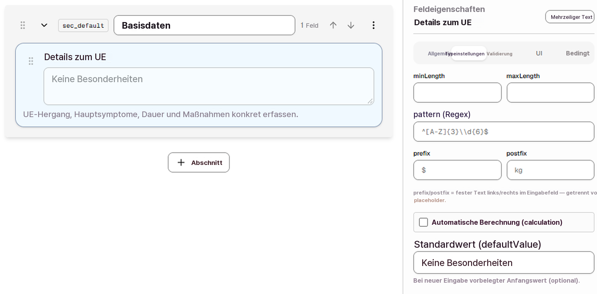
Keine Besonderheiten — erscheint vorbelegt im Eingabefeld auf dem CanvasStandardwert (defaultValue) — Geben Sie den Anfangswert ein, der bei einer neuen Eingabe vorbelegt wird. (optional)
Das Eingabefeld auf dem Canvas erscheint mit eingetragenem Standardwert.
Zu beachten
Unbedingt prüfen Datenschäden · Formular nicht abschließbar
- • ⛔ Standardwerte bei Freitextelementen sind besonders riskant. Tragen Sie wie in der Aufnahme
Keine Besonderheitenein, wird „Keine Besonderheiten“ auch für Probanden unverändert gespeichert, die tatsächlich nicht geprüft wurden. Es sammeln sich Daten ohne Nachweis, dass der Erfasser geprüft hat; verwenden Sie Standardwerte daher nicht bei sicherheitsrelevanten Elementen.
Leicht missverständliches Verhalten
- • Der Standardwert gilt nur für neu erstellte Eingaben. Bereits gespeicherte Daten werden nicht geändert.
- • Wenn Fälle ohne zu erfassenden Inhalt gesondert erfasst werden müssen, verwenden Sie statt eines Standardwerts „Nicht gemessen“ zulassen 2.4. Da die Erklärung mit aufgezeichnet wird, lässt sich „geprüft, aber nichts zu erfassen“ von „nicht geprüft“ unterscheiden.
Hinweis
- • Auch der Standardwert muss die Längen- · Regex-Begrenzungen 3.2 · 3.3 erfüllen. Ein Standardwert, der gegen die Begrenzungen verstößt, wird beim Speichern blockiert.
Tab „Validierung“ — Wertprüfung vor dem Speichern
- 4.1Ohne Validierungsregeln
- 4.2Regel hinzufügen
- 4.3Fertig erstellte Regel
4.1Ohne Validierungsregeln
Überblick
In diesem Tab werden Regeln gesammelt, die vor dem Speichern prüfen, ob ein Wert die Bedingungen erfüllt. Verwenden Sie ihn, wenn Sie feinere Bedingungen als die Längen- · Formatbegrenzung der Typeinstellungen Kap. 3 anwenden möchten.
Bildschirmbeschreibung
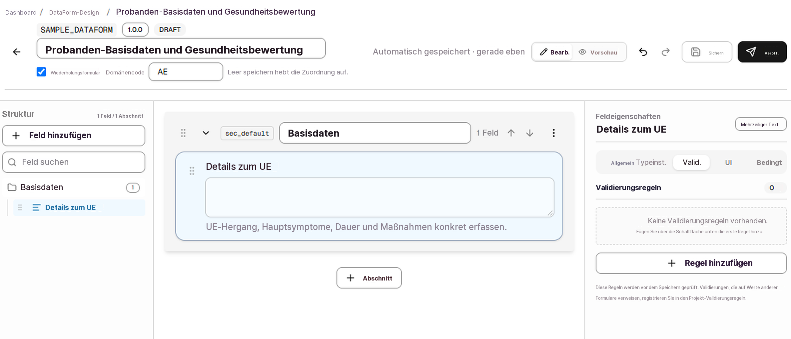
[+ Regel hinzufügen] — erstellt die erste Regel. Der Bildschirm nach der Auswahl wird in 4.2 erläutert.
Bereich Validierungsregeln und Anzahl der registrierten Regeln. Anfangs 0 Regeln.
Ohne Regeln erscheint der Hinweis „Keine Validierungsregeln vorhanden. Fügen Sie über die Schaltfläche unten die erste Regel hinzu.“
Hinweis unten — „Diese Regeln werden vor dem Speichern geprüft. Validierungen, die auf Werte anderer Formulare verweisen, registrieren Sie in den Projekt-Validierungsregeln.“
Zu beachten
Unbedingt prüfen Datenschäden · Formular nicht abschließbar
- • Validierungen, die auf Werte anderer Formulare verweisen, können hier nicht erstellt werden. Registrieren Sie solche Regeln im Bildschirm „Projekt-Validierungsregeln“. Dieser Tab behandelt nur Prüfungen, die innerhalb desselben Formulars abgeschlossen sind.
Leicht missverständliches Verhalten
- • Sie müssen keine Regel erstellen. Bei Freitextelementen lässt sich der Inhalt schwer maschinell prüfen; oft ist es realistischer, nur eine Längenbegrenzung 3.2 zu setzen und den Rest über den Hilfetext zu erläutern.
- • Sie können mehrere Regeln erstellen; gespeichert wird nur, wenn alle aktiven Regeln erfüllt sind.
4.2Regel hinzufügen
Überblick
Wenn Sie in 4.1 [+ Regel hinzufügen] wählen, wird der Block Regel 1 erstellt. Sie können mehrere Regeln erstellen und jede einzeln aktivieren · deaktivieren.
Bildschirmbeschreibung
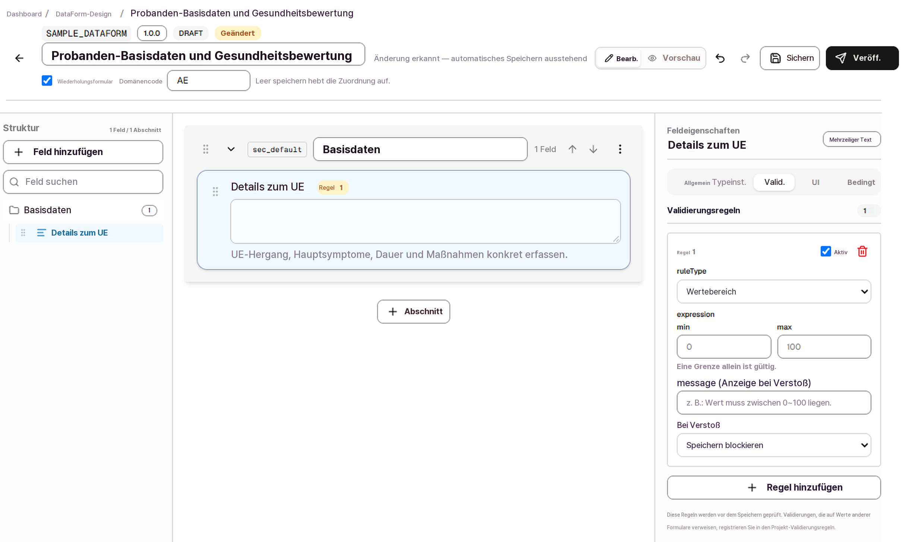
[+ Regel hinzufügen] — erstellt eine weitere Regel. (Dieselbe Schaltfläche, die Sie in 4.1 gewählt haben.)
Der Block „Regel 1“ wird erstellt, und neben dem Anzeigenamen auf dem Canvas erscheint das Badge „Regel 1“.
Die Regelanzahl ändert sich auf 1 Regel.
Checkbox Aktiv und Symbol Löschen — Wenn Sie das Häkchen entfernen, können Sie die Regel vorübergehend aussetzen, ohne sie zu löschen. Das Löschsymbol löscht die Regel endgültig.
ruleType — die Art der Regel. In der Aufnahme ist Wertebereich ausgewählt.
min — die Untergrenze des Bereichs.
max — die Obergrenze des Bereichs.
Die hellgrauen 0 · 100 und „z. B.: Wert muss zwischen 0~100 liegen.“ sind Eingabebeispiele und keine eingestellten Werte. Wie der Bildschirmhinweis sagt: „Eine Grenze allein ist gültig.“
message (Anzeige bei Verstoß) — der Text, der Benutzern bei einem Regelverstoß angezeigt wird.
Bei Verstoß — Wählen Sie zwischen Speichern blockieren und Warnung.
Zu beachten
Unbedingt prüfen Datenschäden · Formular nicht abschließbar
- • ⛔ Die Regel „Wertebereich“ passt nicht zu mehrzeiligem Text. Dieser Typ speichert Werte als Zeichenkette, daher ist ein numerischer Größenvergleich nicht möglich. Die Aufnahme dient nur dazu, den Aufbau eines Regelblocks zu zeigen; verwenden Sie in der Praxis die Regel „Format (Regex)“ 4.3.
- • Bleibt message leer, wissen Benutzer nicht, warum gesperrt wurde. Geben Sie unbedingt einen Text ein.
Leicht missverständliches Verhalten
- • Speichern blockieren verhindert das Speichern, bis der Wert korrigiert ist; Warnung weist nur darauf hin und lässt das Speichern zu. Bei Freitextelementen lässt sich der Inhalt schwer maschinell beurteilen, daher ist Warnung oft die passende Wahl.
- • Wählen Sie erneut [+ Regel hinzufügen], um Regel 2, 3 … hinzuzufügen. Gespeichert wird nur, wenn alle aktiven Regeln erfüllt sind.
4.3Fertig erstellte Regel
Überblick
Die leeren Elemente aus 4.2 sind vollständig ausgefüllt. Mit dieser Einstellung wird das Speichern blockiert, wenn ein Wert eingegeben wird, der nicht aus Hangul besteht, und der festgelegte Text wird angezeigt.
Bildschirmbeschreibung
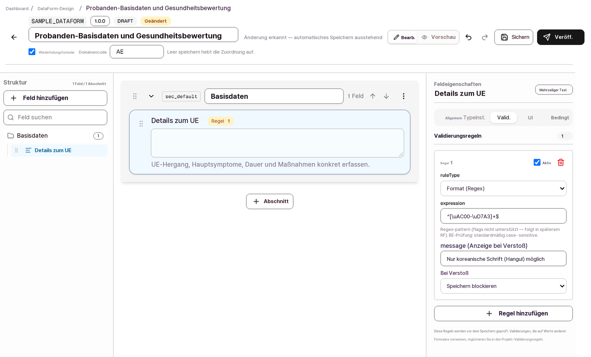
ruleType = Format (Regex) — eine Regel, die das Format des Werts prüft. Dies ist die Regelart, die bei mehrzeiligem Text tatsächlich verwendet werden kann.
expression = ^[\uAC00-\uD7A3]+$ — bedeutet „nur Hangul, mindestens 1 Zeichen“.
Bildschirmhinweis — die Prüfung mit regulären Ausdrücken unterscheidet Groß- und Kleinschreibung. (Die Angabe von flags wird nicht unterstützt.)
message = Nur koreanische Schrift (Hangul) möglich — geeignet ist ein Text, der mitteilt, wie der Wert zu korrigieren ist.
Bei Verstoß = Speichern blockieren — gespeichert wird erst, wenn die Bedingung erfüllt ist.
Zu beachten
Unbedingt prüfen Datenschäden · Formular nicht abschließbar
- • ⛔
^[\uAC00-\uD7A3]+$in der Aufnahme lässt keine mehrzeiligen Eingaben durch. Denn Zeilenumbrüche · Leerzeichen · Ziffern · Satzzeichen sind keine Hangul-Zeichen und werden alle abgewiesen. Wenn Sie für Freitextelemente eine Formatregel festlegen, nehmen Sie Zeilenumbrüche und Leerzeichen unbedingt in die zulässigen Zeichen auf. 3.3 - • Legen Sie beide gleichzeitig fest, wird nur gespeichert, wenn beide erfüllt sind. Widersprechen sich die Formate, kann gar kein Wert gespeichert werden; es ist daher sicherer, nur eines von beiden zu verwenden.
Leicht missverständliches Verhalten
- • pattern in den Typeinstellungen 3.3 und die Regel „Format (Regex)“ im Tab „Validierung“ prüfen dasselbe. Der Unterschied ist, dass Sie den Text bei einem Verstoß und die Behandlung selbst festlegen können — wenn Benutzer den Grund erfahren müssen, verwenden Sie die Validierungsregel.
- • Auch nach dem Speichern der Regel wird ihre Anwendung sofort ausgesetzt, wenn Sie das Häkchen bei Aktiv entfernen — verwenden Sie dies, um eine Regel vorübergehend auszusetzen, ohne sie zu löschen. 4.2 ②
Tab „UI“ — Bildschirmanordnung und Hinweistexte
- 5.1Gesamtaufbau des Tabs „UI“
- 5.2Layoutbreite
- 5.3Schreibgeschützt · Ausblenden
- 5.4placeholder · helpText
5.1Gesamtaufbau
Überblick
In diesem Tab legen Sie nicht den Wert selbst fest, sondern wie das Feld auf dem Bildschirm angeordnet und erläutert wird. Die Einstellungen dieses Tabs ändern die gespeicherten Daten nicht. Ausblenden verbirgt das Feld jedoch nur auf dem Bildschirm und nimmt es nicht aus der Pflichtfeldzählung aus; lesen Sie daher vor der Verwendung 5.3.
Bildschirmbeschreibung
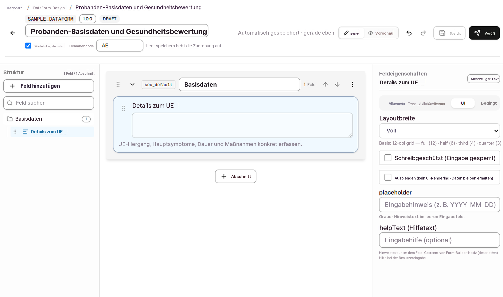
Layoutbreite — die Breite, die dieses Feld in einer Zeile einnimmt. Die Bedeutung der Optionen steht im Hinweis direkt darunter: „Basis: 12-col grid — full (12) · half (6) · third (4) · quarter (3)“. 5.2
Schreibgeschützt (Eingabe gesperrt) — wird angezeigt, kann aber nicht geändert werden. 5.3
Ausblenden (kein UI-Rendering · Daten bleiben erhalten) — verbirgt das Feld auf dem Bildschirm. 5.3
placeholder — grauer Hinweis im Eingabefeld, solange kein Wert vorhanden ist. 5.4
helpText (Hilfetext) — Hinweistext, der unter dem Feld angezeigt wird. 5.4
Zu beachten
Leicht missverständliches Verhalten
- • Die hellgrauen Texte
Eingabehinweis (z. B. YYYY-MM-DD)·Eingabehilfe (optional)in den Eingabefeldern sind Eingabebeispiele und keine eingestellten Werte. - • Standard ist Layoutbreite = Voll; Schreibgeschützt · Ausblenden sind deaktiviert. Für Freitextelemente ist eine große Breite vorteilhaft; belassen Sie daher am besten Voll. 5.2
Hinweis
- • Es gibt keine Einstellung für die Höhe des Eingabefelds. Benutzer können das Feld in der Eingabemaske selbst vergrößern, indem sie an der rechten unteren Ecke ziehen.
- • Alle Elemente sind optional. Auch unverändert funktioniert das Formular normal.
5.2Layoutbreite
Überblick
Wählen Sie die Breite, die dieses Feld im 12-column grid einnimmt, das eine Zeile in 12 Spalten teilt. Verwenden Sie dies, um schmale Elemente nebeneinander anzuordnen und das Formular zu verkürzen.
Bildschirmbeschreibung
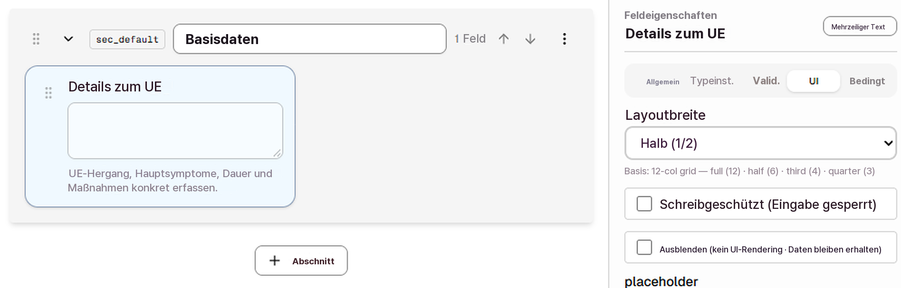
Layoutbreite — Legen Sie die Breite in der Auswahlliste fest. Im Beispiel Halb (1/2).
Das Eingabefeld auf dem Canvas wird auf halbe Breite verkleinert. Auch der Hilfetext wird an die schmalere Breite angepasst und auf zwei Zeilen umbrochen.
Zu beachten
Unbedingt prüfen Datenschäden · Formular nicht abschließbar
- • Bei mehrzeiligem Text sollten Sie die Breite besser nicht verringern. Weniger Zeichen pro Zeile lassen denselben Inhalt viel länger wirken, und der gerade verfasste Text lässt sich schwer auf einen Blick überprüfen. Empfohlen wird Voll.
Leicht missverständliches Verhalten
- • Wenn Sie die Breite verringern, wird das nächste Feld in derselben Zeile angeordnet. Übersteigt die Summe einer Zeile 12, wird in die nächste Zeile umgebrochen.
Hinweis
- • Die Höhe des Eingabefelds hängt nicht von der Breiteneinstellung ab. Die Höhe passen Benutzer in der Eingabemaske selbst an.
- • Auf Geräten mit schmalem Bildschirm können die Felder unabhängig von der Einstellung einzeln untereinander angeordnet werden.
Breitenoptionen
| Option | Belegte Spalten | Anzahl pro Zeile |
|---|---|---|
| Voll | 12 | 1 |
| Halb (1/2) | 6 | 2 |
| Drittel (1/3) | 4 | 3 |
| Viertel (1/4) | 3 | 4 |
5.3Schreibgeschützt · Ausblenden
Überblick
Damit verhindern Sie, dass ein Feld geändert wird, oder sorgen dafür, dass es nicht angezeigt wird. In beiden Fällen bleiben die gespeicherten Daten erhalten.
Bildschirmbeschreibung
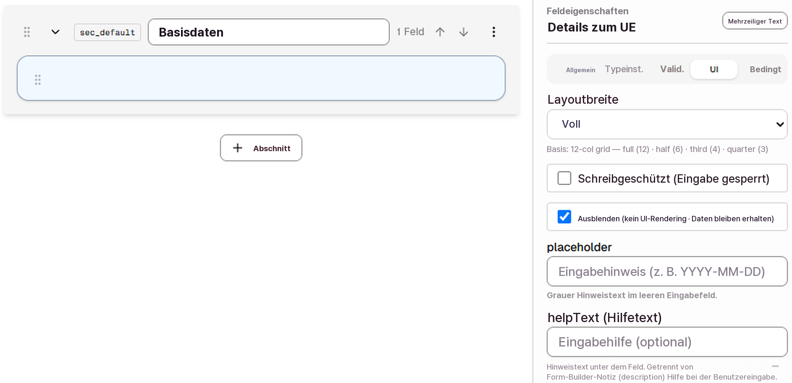
Schreibgeschützt (Eingabe gesperrt) — der Wert wird angezeigt, kann aber von Benutzern nicht geändert werden. (In dieser Aufnahme deaktiviert)
Ausblenden (kein UI-Rendering · Daten bleiben erhalten) — wird in der Eingabemaske nicht angezeigt. Bereits gespeicherte Werte werden nicht gelöscht.
Das Feld verschwindet vom Canvas, und der Abschnitt wirkt leer.
Zu beachten
Unbedingt prüfen Datenschäden · Formular nicht abschließbar
- • ⛔ Blenden Sie keine Pflichtfelder aus. Das Ausblenden im Tab „UI“ verbirgt das Feld nur auf dem Bildschirm und nimmt es nicht aus der Pflichtfeldzählung aus — ein Element, das Benutzer nicht ausfüllen können, bleibt im Nenner, und das Formular kann nicht abgeschlossen werden.
- • Ausblenden löscht keine Daten. Das Feld verschwindet nur vom Bildschirm; um den Wert zu löschen, müssen Sie das Feld löschen.
Leicht missverständliches Verhalten
- • Es unterscheidet sich vom Ausblenden im Tab „Bedingt“. Felder, die ausgeblendet sind, weil die Bedingung nicht zutrifft, werden aus der Pflichtfeldzählung ausgenommen Kap. 6. Obwohl beide als „Ausblenden“ bezeichnet werden, ist die Behandlung bei der Validierung genau entgegengesetzt; unterscheiden Sie daher beides.
- • Schreibgeschützt und Ausblenden unterscheiden sich. Schreibgeschützt bedeutet „anzeigen, aber nicht änderbar“, Ausblenden bedeutet „nicht anzeigen“. Wenn bereits verfasster Text angezeigt, aber nicht mehr geändert werden soll, verwenden Sie Schreibgeschützt.
Hinweis
- • Auch ausgeblendet bleibt das Feld im Strukturbereich erhalten — Sie können es erneut auswählen und die Einstellung zurücksetzen.
5.4placeholder · helpText
Überblick
Zwei Texte, die Benutzern mitteilen, was und wie sie eingeben sollen. Sie unterscheiden sich in Anzeigeposition und Zeitpunkt des Verschwindens. Bei Freitextelementen bestimmen diese beiden Texte die Qualität der Aufzeichnung.
Bildschirmbeschreibung
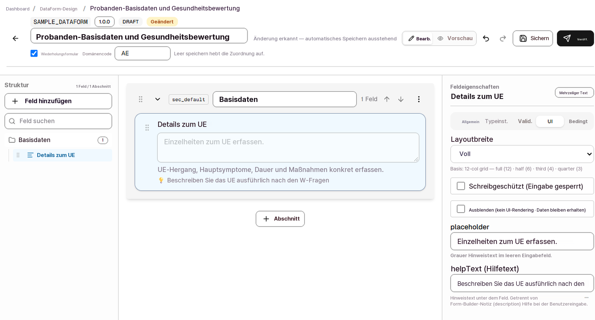
placeholder — Geben Sie den Hinweistext ein, der im Eingabefeld angezeigt wird. Im Beispiel Einzelheiten zum UE erfassen.
Erscheint grau im Eingabefeld. Sobald Benutzer mit der Eingabe beginnen, verschwindet er.
helpText (Hilfetext) — Geben Sie den Hinweistext ein, der unter dem Feld angezeigt wird. Im Beispiel Beschreiben Sie das UE ausführlich nach den W-Fragen
Erscheint unter dem Feld zusammen mit einem Glühbirnensymbol (💡). Er bleibt auch während der Eingabe sichtbar.
Zu beachten
Unbedingt prüfen Datenschäden · Formular nicht abschließbar
- • Schreiben Sie die Erfassungskriterien in helpText. placeholder verschwindet bei Beginn der Eingabe; Vorgaben, die während des gesamten Schreibens beachtet werden müssen, wie „ausführlich nach den W-Fragen“ in der Aufnahme, gehören daher in helpText. Bei Freitextelementen ist dieser Unterschied besonders wichtig.
- • description und helpText sind unterschiedliche Elemente. Wie der Bildschirmhinweis sagt — helpText ist „Getrennt von Form-Builder-Notiz (description) — Hilfe bei der Benutzereingabe“. Auch auf dem Canvas der Aufnahme erscheinen Hilfetext und 💡-Text jeweils in einer eigenen Zeile.
- • Wenn Sie eine Formatbegrenzung 3.3 oder Längenbegrenzung 3.2 festgelegt haben, weisen Sie per helpText auch auf diese Bedingung hin. Ohne Hinweis werden Benutzer nach langem Schreiben erst beim Speichern blockiert und kennen den Grund nicht.
Unterschied der drei Texte
| Element | Anzeigeposition | Bei Beginn der Eingabe | Einstellort |
|---|---|---|---|
| placeholder | im Eingabefeld (grau) | verschwindet | Tab „UI“ |
| helpText | unter dem Feld (💡) | bleibt sichtbar | Tab „UI“ |
| description | unter dem Anzeigenamen | bleibt sichtbar | Tab „Allgemein“ 2.1 |
Tab „Bedingt“ — Anzeige abhängig von anderen Werten
- 6.1Bedingte Anzeige aktivieren
- 6.2Bedingung festlegen
6.1Bedingte Anzeige aktivieren
Überblick
Mit dieser Funktion wird das Feld abhängig vom Wert eines anderen Felds angezeigt oder ausgeblendet. Sie wird für Verzweigungen verwendet, z. B. um eine ausführliche Beschreibung nur abzufragen, wenn „UE aufgetreten = Ja“. Die Funktion passt besonders gut zu Freitextelementen: Personen, die nichts zu erfassen haben, bekommen das Feld gar nicht erst angezeigt.
Bildschirmbeschreibung
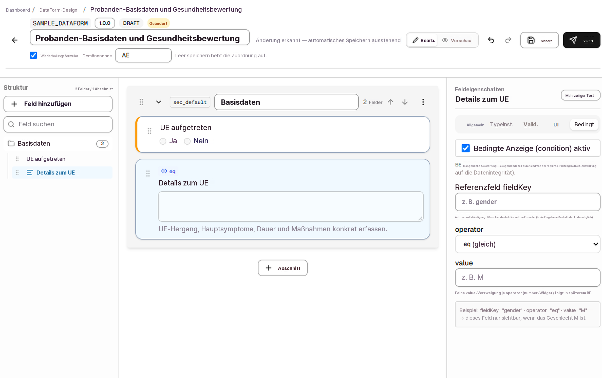
Bedingte Anzeige (condition) aktiv — Wenn aktiviert, werden die folgenden Bedingungseinstellungen angezeigt.
Über dem Feld auf dem Canvas erscheint das Badge 🔗 eq und zeigt an, dass eine Bedingung angewendet wird.
⚠ Bildschirmhinweis — „ausgeblendete Felder sind von der required-Prüfung befreit (Auswirkung auf die Datenintegrität).“ Die Bedingung wird vom System ausgewertet.
Referenzfeld fieldKey — ein anderes Feld im selben Formular, das als Grundlage der Bedingung dient. Geschwisterfelder desselben Formulars werden automatisch vervollständigt; Werte, die nicht in der Liste stehen, können Sie auch direkt eingeben.
operator — die Vergleichsart. Standard ist eq (gleich).
value — der Vergleichswert.
Beispiel unten — fieldKey="gender" · operator="eq" · value="M" → dieses Feld nur sichtbar, wenn das Geschlecht M ist.
Zu beachten
Unbedingt prüfen Datenschäden · Formular nicht abschließbar
- • Wenn Sie eine Bedingung festlegen, kann die Pflichtprüfung entfallen. Solange das Feld ausgeblendet ist, weil die Bedingung nicht zutrifft, wird das Formular abgeschlossen, auch wenn dieses Feld ein Pflichtfeld und leer ist. Dies ist kein Fehler, sondern beabsichtigtes Verhalten.
- • Wird die Bedingung falsch, während bereits ein Wert eingegeben ist, verschwindet dieser Inhalt vom Bildschirm. Ausführlich verfasster Text wird dann nicht mehr angezeigt; seien Sie daher vorsichtig, wenn Sie das Feld, das die Verzweigung steuert, nachträglich ändern.
Leicht missverständliches Verhalten
- • Für Freitext-Pflichtelemente ist die Kombination mit bedingter Anzeige der Standardweg. Wird das Feld nur bei „UE aufgetreten = Ja“ angezeigt, ist es nur für die betroffenen Personen Pflicht, und alle anderen können das Formular normal abschließen. 2.2
Hinweis
- • Wenn Sie die Bedingung aktivieren und das Referenzfeld leer lassen, ist die Bedingung nicht erfüllt. Geben Sie unbedingt ②~④ vollständig ein. 6.2
6.2Bedingung festlegen
Überblick
Die in 6.1 aktivierte Bedingung ist vollständig eingegeben. Mit dieser Einstellung wird dieses Feld nur dann in der Eingabemaske angezeigt, wenn das Feld „UE aufgetreten“ den Wert 1 (Ja) hat.
Bildschirmbeschreibung
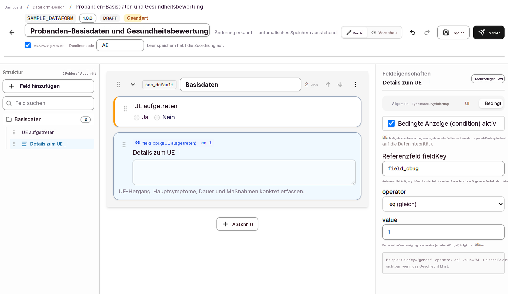
UE aufgetreten den Wert 1 hatReferenzfeld fieldKey = field_cbug — verweist auf das Feld „UE aufgetreten“ im selben Formular.
operator = eq (gleich)
value = 1 — Geben Sie nicht das auf dem Bildschirm angezeigte „Ja“ ein, sondern den gespeicherten Wert dieser Option.
Ergebnis nach Eingabe von ①~③ — das Badge auf dem Canvas wird konkret zu 🔗 field_cbug(UE aufgetreten) eq 1. So sehen Sie sofort, welche Bedingung gilt.
Das referenzierte Feld „UE aufgetreten“ muss sich im selben Formular befinden; Sie können es im Strukturbaum prüfen.
Beispiel unten — fieldKey="gender" · operator="eq" · value="M" → dieses Feld nur sichtbar, wenn das Geschlecht M ist.
Zu beachten
Unbedingt prüfen Datenschäden · Formular nicht abschließbar
- • ⛔ Geben Sie bei value nicht den Bildschirmtext, sondern den gespeicherten Wert ein. In der Aufnahme erscheint das Referenzfeld als Ja / Nein, der tatsächlich gespeicherte Wert ist jedoch
1. Geben Sie „Ja“ ein, ist die Bedingung nie erfüllt, und dieses Feld wird niemals angezeigt. Prüfen Sie zuerst die gespeicherten Werte der Optionen des referenzierten Auswahlfelds. - • Das Referenzfeld muss sich im selben Formular befinden. Auf Werte anderer Formulare kann nicht verwiesen werden.
- • Wenn Sie den fieldKey des Referenzfelds ändern oder das Feld löschen, wird die Bedingung ungültig. Die Bedingung ist nicht über den Anzeigenamen, sondern über den fieldKey verknüpft. (Aus demselben Grund wie beim fieldKey-Hinweis in 2.1.)
Hinweis
- • Bedingungen verkürzen das Formular und reduzieren unnötige Eingaben. Widersprechen sich Bedingungen jedoch, entstehen Felder, die nie angezeigt werden; prüfen Sie daher nach der Einstellung unbedingt in der Vorschau.
Anhang
- 7.1Einstellungen auf einen Blick
7.1Einstellungen des mehrzeiligen Textfelds auf einen Blick
Einstellungen je Tab
| Tab | Element | Was wird festgelegt | Abschnitt |
|---|---|---|---|
| Allgemein | fieldKey | Tatsächlicher Speicherschlüssel des Werts (nach dem Speichern nicht ändern) | 2.1 |
| label (Anzeigename) | Auf dem Bildschirm angezeigter Elementname | 2.1 | |
| description (Hilfetext) | Ergänzende Beschreibung unter dem Anzeigenamen | 2.1 | |
| Pflichtfeld | Ob eine Eingabe zwingend ist (zusammen mit bedingter Anzeige verwenden) | 2.2 | |
| SDV-Verifizierung | Ob Gegenstand des CRA-Quelldatenabgleichs · ob Verifizierung erforderlich | 2.3 | |
| AE-Bedeutungsrolle | Was dieses Feld im AE-Formular bedeutet | ※ | |
| „Nicht gemessen“ zulassen | Ob „kann nicht erfasst werden“ als Wert erfasst werden kann · Anzeigelabel · Indikator | 2.4 | |
| Typeinstellungen | minLength · maxLength | Unter- · Obergrenze der Zeichenanzahl (inkl. Zeilenumbrüche · Standard-Obergrenze 2000) | 3.2 |
| pattern (Regex) | Format, dem der Wert entsprechen muss (Zeilenumbrüche müssen zulässig sein) | 3.3 | |
| Standardwert (defaultValue) | Bei neuer Eingabe vorbelegter Wert (für Freitext nicht empfohlen) | 3.4 | |
| Validierung | ruleType | Regelart — bei diesem Typ Format (Regex) verwenden | 4.2 · 4.3 |
| expression | Bedingung der Regel | 4.3 | |
| message | Bei Verstoß angezeigter Text | 4.2 | |
| Bei Verstoß · Aktiv | Speichern blockieren / Warnung · Regel aktiv · inaktiv | 4.2 | |
| UI | Layoutbreite | Breite im 12-col grid — Voll empfohlen | 5.2 |
| Schreibgeschützt | Anzeigen, aber nicht änderbar | 5.3 | |
| Ausblenden | Nicht angezeigt (gespeicherter Wert bleibt · bleibt in der Pflichtfeldzählung) | 5.3 | |
| placeholder · helpText | Hinweistexte zur Eingabe — Erfassungskriterien in helpText | 5.4 | |
| Bedingt | Bedingung aktiv | Ob bedingte Anzeige verwendet wird (von der Pflichtprüfung befreit) | 6.1 |
| Referenzfeld fieldKey | Feld im selben Formular als Grundlage der Bedingung | 6.2 | |
| operator · value | Vergleichsart und Vergleichswert (gespeicherten Wert eingeben) | 6.2 |
Unbedingt merken
Unbedingt prüfen Datenschäden · Formular nicht abschließbar
- • Enthält die Formatbegrenzung keine Zeilenumbrüche, werden mehrzeilig verfasste Werte nicht gespeichert. Das ist der häufigste Fehler bei diesem Typ. 3.3 · 4.3
- • Verwenden Sie bei Freitextelementen keine Standardwerte. Ungeprüfte Inhalte werden als „Keine Besonderheiten“ gespeichert. 3.4
- • Wenn Sie den fieldKey nach dem Speichern ändern, geht die Verknüpfung mit vorhandenen Daten verloren. 2.1
- • Nur Felder, die durch bedingte Anzeige ausgeblendet sind, werden aus der Pflichtfeldzählung ausgenommen. Das Ausblenden im Tab „UI“ nimmt sie nicht aus; werden Pflichtfelder ausgeblendet, kann das Formular nicht abgeschlossen werden. 5.3 · 6.1
Leicht missverständliches Verhalten
- • value in der Bedingung ist nicht der Bildschirmtext, sondern der gespeicherte Wert der Option. 6.2
- • Wenn Sie einen Wert ändern, wird die SDV-Verifizierung aufgehoben, und der Qualitätsstatus fällt auf PENDING zurück. 2.3
Hinweis
- • Für die Layoutbreite wird Voll empfohlen. Bei geringerer Breite lässt sich der gerade verfasste Text schwer überprüfen. 5.2
Nicht in diesem Dokument behandelt
※ AE-Bedeutungsrolle — befindet sich im Tab „Allgemein“, hat aber keinen eigenen Abschnitt, da keine Aufnahmen des Einstellvorgangs vorliegen. Sie wird nur in Projekten festgelegt, die Formulare für unerwünschte Ereignisse (AE) verwenden; Einzelheiten finden Sie in der AE-Dokumentation.
prefix · postfix — die Elemente werden im Tab „Typeinstellungen“ angezeigt, gelten aber nicht für mehrzeiligen Text. Diese Funktion fügt links und rechts vom Eingabefeld festen Text an; verwenden Sie sie daher bei den Typen einzeiliger Text · Zahl. 3.1
Automatische Berechnung (calculation) — wird aus demselben Grund bei diesem Typ nicht verwendet. Diese Funktion berechnet einen Wert aus den Werten anderer Felder; verwenden Sie sie daher beim Typ Zahl. 3.1